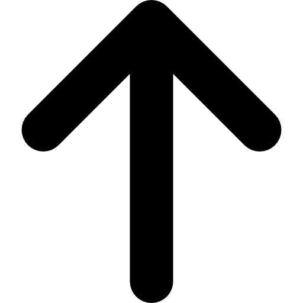

Swimming styles
Free Style
The starting position for front crawl is known as the "streamline" position. The swimmer starts on the stomach with both arms stretched out to the front and both legs extended to the back. The arm movements of the front crawl provide most of the forward motion. The arms alternate from side to side, so while one arm is pulling and pushing under the water, the other arm is recovering above the water. The move can be separated into four parts: the downsweep, the insweep, the upsweep, and the recovery. Each complete arm movement is referred to as a stroke; one stroke with each arm forms a stroke cycle. The most usual leg movement with the front crawl is called the flutter kick. The legs move alternately, with one leg kicking downward while the other leg moves upward. While the legs provide only a small part of the overall speed, they are important to stabilize the body position. Normally, the face is in the water during front crawl with eyes looking at the lower part of the wall in front of the pool, with the waterline between the brow line and the hairline. Breaths are taken through the mouth by turning the head to the side of a recovering arm at the beginning of the recovery, and breathing in the triangle between the upper arm, lower arm, and the waterline. The body rotates about its long axis with every arm stroke so that the shoulder of the recovering arm is higher than the shoulder of the pushing/pulling arm. This makes the recovery much easier and reduces the need to turn the head to breathe.

Breaststroke
The breaststroke starts with the swimmer lying in the water face down, arms extended straight forward and legs extended straight to the back. There are three steps to the arm movement: outsweep, insweep, and recovery. The movement starts with the outsweep. From the streamline position, the palms turn out and the hands separate to slightly past shoulder width. The outsweep is followed by the insweep, where the hands point down and push the water backwards. The elbows stay in the horizontal plane through the shoulders. The hands push back until approximately the vertical plane through the shoulders. At the end of the insweep the hands come together with facing palms in front of the chest and the elbows are at the side at the body. In the recovery phase, the hands are moved forward again into the initial position under water. The leg movement, colloquially known as the "frog kick" or "whip kick", consists of two phases: bringing the feet into position for the thrust phase and the insweep phase. From the initial position with the legs stretched out backward, the feet are moved together towards the posterior, while the knees stay together. Then the feet point outward in preparation for the thrust phase. In the thrust phase, the legs are moved elliptically back to the initial position. The easiest way to breathe during breaststroke is to let the head follow the spine. When the swimmer's elbows have reached the line of his eye and have begun to rise, his head starts to lift. The movement starts in the initial position with the body completely straight. Body movement is coordinated such that the legs are ready for the thrust phase while the arms are halfway through the insweep, and the head is out of the water for breathing.

Backstroke
In the initial position, the swimmer performing backstroke lies flat on the back; arms stretched with extended fingertips, and legs extended backwards. In backstroke, the arms contribute most of the forward movement. The arm stroke consists of two main parts: the power phase (consisting of three separate parts) and the recovery. The arms alternate so that always one arm is underwater while the other arm is recovering. From the initial position, one arm sinks slightly under water and turns the palm outward to start the catch phase (first part of the power phase). The hand enters downward (pinkie finger first) then pulling out at a 45 degree angle, catching the water. The Mid-Pull phase consists of pushing the palm of the hand as far down as possible with the fingers pointing upward. At the very end of the Mid-Pull, the palm flaps down for a last push forward down to a depth of 45 cm, creating the finish of the power phase. The leg movement in backstroke is similar to the flutter kick in front crawl. The kick makes a large contribution to the forward speed, while significantly stabilizing the body. Breathing in backstroke is easier than in other strokes, as the mouth and nose are usually above water. Due to the asynchronous movement of the arms, the body tends to roll around its long axis. By taking advantage of this rolling motion, swimmers can increase their effectiveness while swimming backstroke.

Butterfly
The butterfly technique with the dolphin kick consists of synchronous arm movement with a synchronous leg kick. Good technique is crucial to swim this style effectively. The wave-like body movement is also very significant in creating propulsion, as this is the key to easy synchronous over-water recovery and breathing.The butterfly stroke has three parts, the pull, the push, and the recovery. From the initial position, the arm movement starts very similarly to the breast stroke. At the beginning the hands sink a little bit down with the palms facing outwards and slightly down at shoulder width, then the hands move out to create a Y. The pull movement follows a semicircle with the elbow higher than the hand and the hand pointing towards the center of the body and downward to form the traditionally taught "keyhole". The push pushes the palm backward through the water underneath the body at the beginning and at the side of the body at the end of the push. The swimmer only pushes the arms 1/3 of the way to the hips, making it easier to enter into the recovery and making the recovery shorter as also the breathing window. The movement increases speed throughout the pull-push phase until the hand is the fastest at the end of the push. This step is called the release and is crucial for the recovery. The speed at the end of the push is used to help with the recovery. In the recovery, the arms are swung sideways across the water surface to the front, with the elbows straight. The legs are synchronized with each other which uses a whole different set of muscles. The shoulders are brought above the surface by a strong up and medium down kick, and back below the surface by a strong down and up kick. A smooth undulation fuses the motion together.There is only a short window for breathing in the butterfly. Optimally, a butterfly swimmer synchronizes the taking of breaths with the undulation of the body to simplify the breathing process.The breathing process begins during the underwater "press" portion of the stroke. As the hands and forearms move underneath the chest, the body will naturally rise toward the surface of the water. With minimum effort, the swimmer can lift the head to fully break the surface and having the opportunity to breathe.

Go to the top
